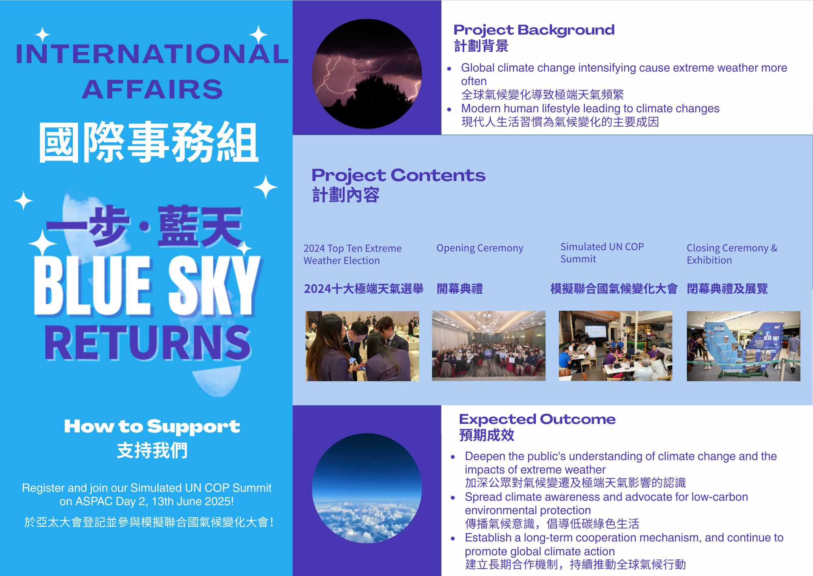

International Affairs | One Step Blue Sky Returns
JCI Peninsula’s One Step Blue Sky Returns project responds to the growing challenge of extreme weather driven by climate change, emphasizing that changing modern lifestyles is a key to effective climate action.
Project Background & Objectives
This flagship international affairs program was created to address:
- Raise public awareness of the rising frequency of extreme weather directly linked to climate change.
- Highlight and educate the public about the profound impact of modern lifestyles on climate change.
Project Content & Key Activities
- 2024 Top 10 Extreme Weather Voting: Build public awareness through participation.
- Opening Ceremony: Official launch inviting broad community attention to climate issues.
- Model United Nations on Climate Change: Experience international climate negotiations and deepen understanding of global cooperation.
- Closing Ceremony & Exhibition: Summarize outcomes and showcase progress and future actions.
Expected Outcomes & Social Impact
- Deepen public understanding of climate change and extreme weather.
- Spread climate protection awareness and promote sustainable, low-carbon lifestyles.
- Build long-term collaboration mechanisms to advance climate action in Hong Kong and globally.
Project Infographic

A snapshot of the project's key initiatives and activities.
How to Support Our Project
Your participation is vital to our climate action. Follow JCI Peninsula’s social media for updates, join Asia-Pacific conference activities, attend upcoming workshops and talks, and take part in our Model UN on climate change to protect our blue skies together.